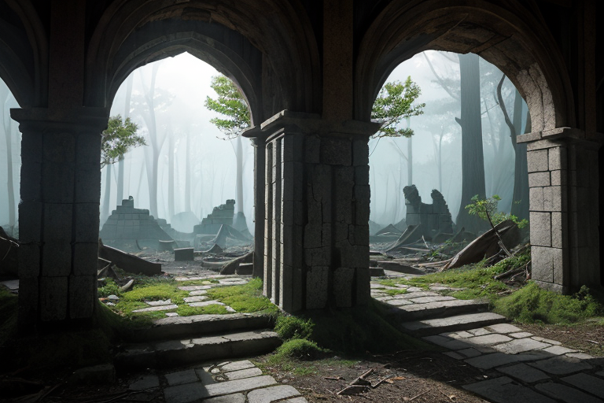
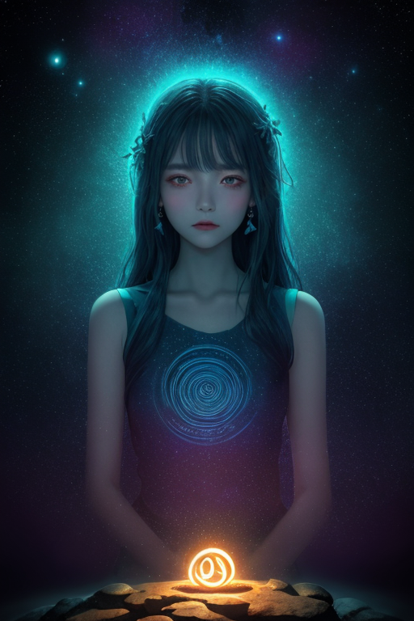
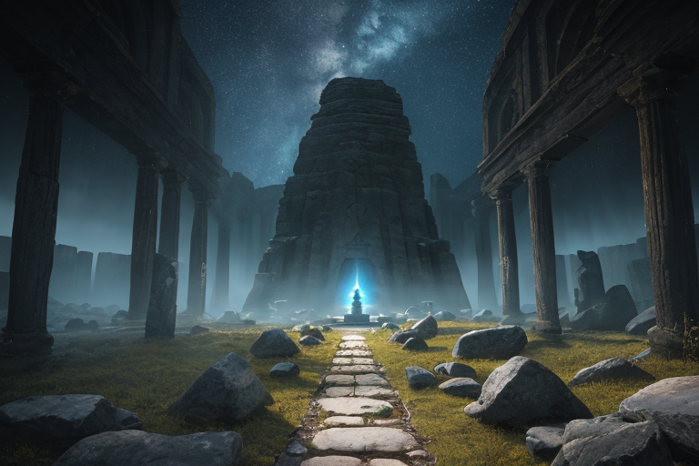
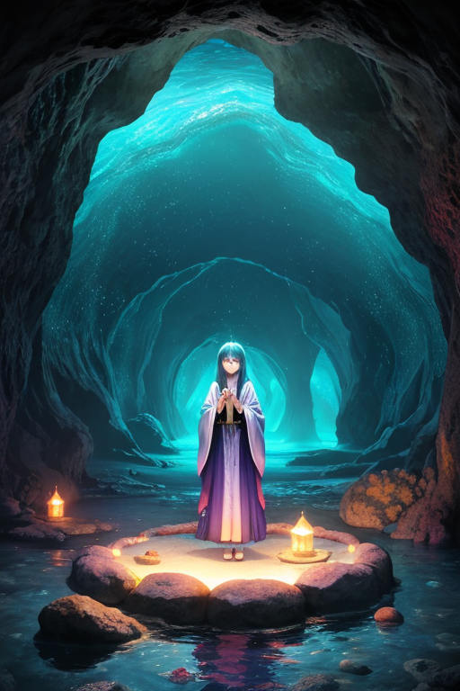
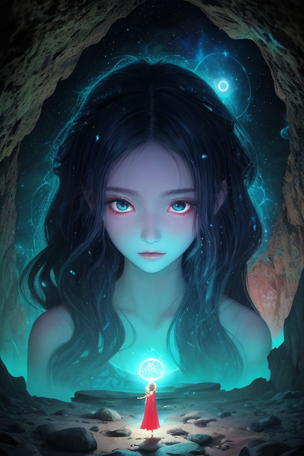

第一章 現実の沖縄
あなたはまだ気づいていない。この土地にも、王がいることを。
首里城の赤瓦は、幾度も焼け落ち、幾度も蘇った記憶を抱えている。観光客のざわめきが去った後の静寂は、かつての王国の息遣いをわずかに残し、深い地盤の歪みを包み込む。その歪みは、単なる地殻のひずみではない。歴史の断絶、文化の圧縮、そして繰り返される喪失の重みが、この島の基盤に刻み込まれた、目に見えない亀裂だ。
斎場御嶽の森深く、神域への石段は湿った空気に沈黙していた。ここは「境界」そのものだ。現世と聖域、生と死、過去と現在が、かすかな振動のように交差する地点。訪れる者は、無意識に足音を潜める。封じられた何かが、岩陰や木々の根元で微睡んでいるような、静謐で不穏な空気が漂う。
王はその中に立っていた。碧と紫の衣をまとった姿は、御嶽の闇に溶け込み、ほとんど風景の一部だった。彼の名はリュウキュリア・エコー。境界の王。彼の役目は、この土地に蓄積された記憶の重圧が、物理的な歪みとして噴出するのを、ほんのわずかに調整することだ。地震を消せない。ただ、揺れが文化財を直撃する角度を、ごく僅かにずらす。封じられた感情の奔流が、一気に溢れ出さないよう、境界を守る。
彼は問う。沈黙のうちに。この土地に生きる者すべてに。
「あなたは、何を受け継ぐ？」

第二章 歪みの兆候
斎場御嶽の聖域は、いつもより深い沈黙に包まれていた。リュウキュリア・エコーは、岩陰に溶けるように立ち、掌に浮かぶ碧と紫の紋章を見つめていた。その星環が、かすかに、不規則に脈打っている。妖精ウタキナが、御嶽の空気を伝って流れてくる微かな震動を、優雅な身振りで示した。これは地震の前触れではない。地殻の歪みそのものよりも、古い。
琉球王国が滅びた日。鉄の雨が降った沖縄戦の日。その膨大な喪失と悲しみの記憶が、この土地の地層に、目に見えない傷として刻まれ続けている。王の役目は、その記憶の重みが一気に解放され、物理的な破壊として現れるのを防ぐことだ。だが今、何かが変わろうとしている。封印された感情が、境界を押し広げようとする、かすかな胎動。国際通りの喧噪の底で、三線の音色の隙間で、泡盛の杯の底で、同じ問いが反響していた。
「あなたは、何を受け継ぐ？」
受け継がざるを得なかった哀しみか。それとも、それでも紡ぎ続ける命の響きか。王の紋章は、答えのない問いを抱えて、静かに光った。

第三章 王の葛藤
斎場御嶽の聖域で、リュウキュリア・エコーは目を閉じていた。岩肌に刻まれた記憶の波が、今、異様な高まりを見せている。1879年の併合、1945年の鉄の雨。島々が背負った「境界」の重みが、地殻の奥で共鳴し、歪みを増幅させようとしていた。通常なら、彼は無感情にその波を封じ込め、静寂に戻す。境界を守るのが、彼の役目だから。
しかし、掌に伝わる震えは、単なる地殻のそれではなかった。それは、御嶽に捧げられた祈りであり、三線に込められた望郷であり、戦禍をくぐり抜けたシーサーの無言の訴えだった。感情を持たぬはずの彼の内側で、ある「疼き」が生じている。これが、哀愁か。
「主よ、波が強まっています」
エコラの声は優雅だが、緊迫を帯びていた。
「このままでは、封じ込めだけでは歪みを吸収しきれません。力の一部を……解放すべきでは」
解放。それは、蓄積された記憶の感情を、この地と共に「感じる」ことを意味する。それは調整者の越権行為だ。しかし、感じずして、真にこの地の歪みを癒せるのか。彼は自らに問うた。あなたは、何を受け継ぐ？ 冷徹な使命か、それとも、この地が彼に植え付けた、この疼きそのものか。碧と紫の紋章が、不確かな輝きを放った。

第四章 妖精との対話
斎場御嶽の最深部、二枚の巨岩が創る聖域の闇に、ウタキナが現れた。その声は、岩肌を伝う滴のように冷たく、確かだった。
「我々は、境界そのものです。故に、封じることも、開くことも知っています」
彼女は、琉球王国が滅び、沖縄戦が焦土を生んだ歴史の裂け目を指さす。その都度、膨大な悲しみと怒りがこの地に蓄積され、歪みとなった。王の役目は、それらを「封印」し、静かなる記憶として沈殿させること。感じることを禁じ、ただ調整する冷徹な器であるべきこと。それが星からの律だった。
「しかし、器が満ちれば、溢れます」エコラが、リュウキュリアの隣に静かに立った。「あなたはもう、器ではありません。あなた自身が、この地の記憶で満たされた『何か』です。封じるべきは、歪みだけですか？ それとも、歪みから生まれた、あなた自身の感情という『力』ですか」
妖精たちの問いは、岩窟に反響した。あなたは何を受け継ぐ？ 使命の冷たさか、それとも、この地があなたに託した、疼くような「何か」か。

第五章 微調整と余韻
斎場御嶽の最深部、岩窟の空気が震えた。リュウキュリアは目を閉じ、両手をわずかに広げた。指先から碧と紫の微光が滲み出し、岩肌に刻まれた無数の境界線を、ゆっくりと塗り直していく。それは修復ではなく、微調整だ。亀裂を塞ぐのではなく、その隙間に新たな「間」を生み、膨張する記憶の圧力を逃がす水路を穿つ。エコラとウタキナの歌声が、光の動きに同期し、かつての祈りのように岩窟を満たした。
「受け継ぐものは……」リュウキュリアの唇が微かに動いた。使命の冷たさ。この島が幾度も味わった喪失の痛み。そして、それらを糧に咲かせた、三線の音色や、潮風に混じる泡盛の香りのような、しなやかな生の営み。全てだ。感情という「力」は、封じるものではなく、調整のための「重り」となる。
光が収束し、岩窟は以前よりも深い静寂に包まれた。歪みは鎮まった。代わりに、王の胸中には、この地の記憶の全てが、冷たさでも熱さでもない、確かな「質量」として沈殿していた。それは代償ではなく、新たな役目のはじまりだった。
首里城の遠景を背に、リュウキュリアはそっと息を吐いた。調整は終わった。次に訪れる台風の波も、かつての戦火の記憶も、この「質量」があれば、少しだけ違う角度で受け流せる。
あなたの町にも、王がいる。